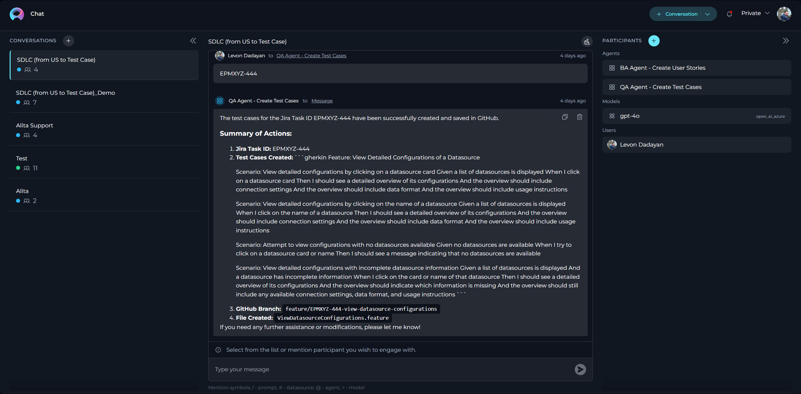
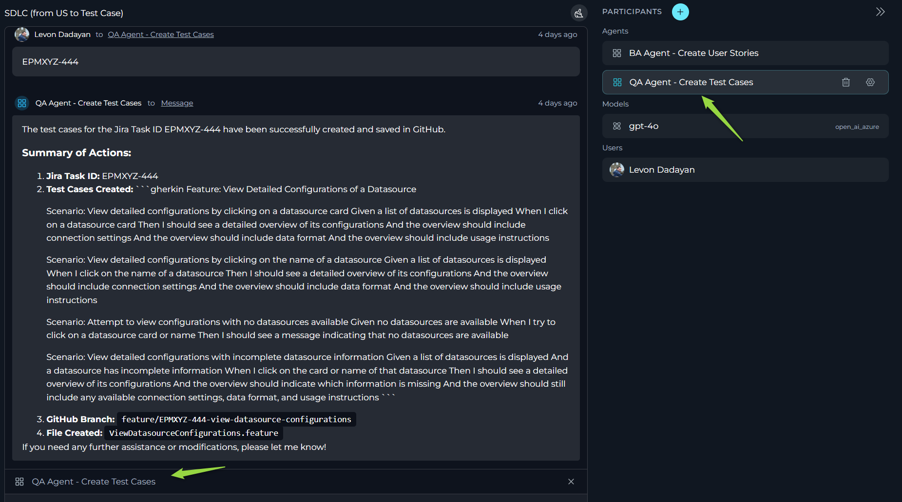
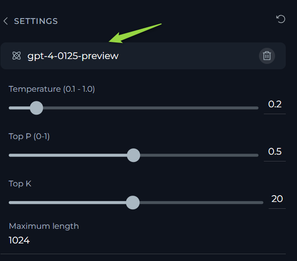
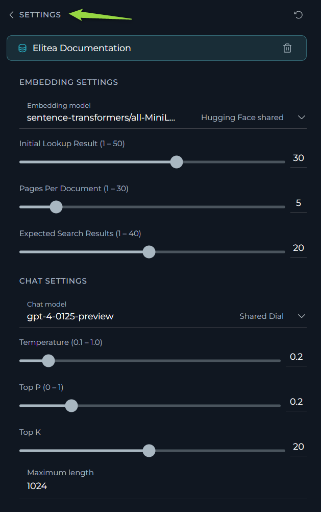
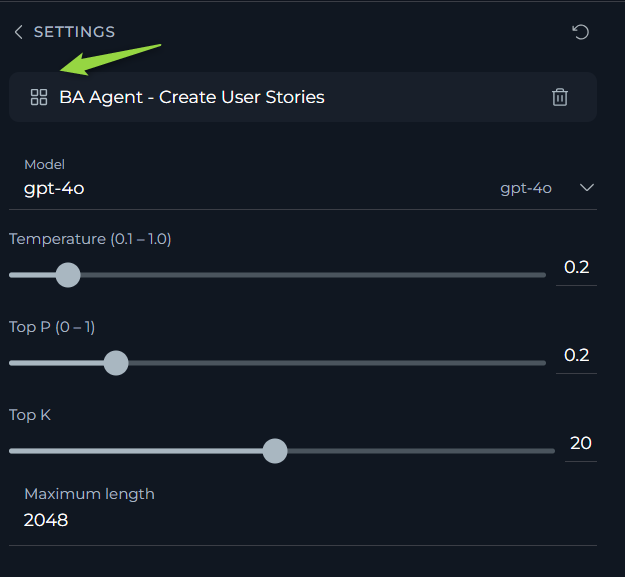

Conversations
ELITEA Chat is an ultimate feature, allowing you to combine all ELITEA features in one place and achieve the best output and results.
In the ELITEA framework, a conversation is a dialogue among various participants such as selected language models, prompts, datasources, agents, and human users. The chat uses natural language to interact with a human and receive/give feedback. Within one conversation, you can refer to previous questions and answers. However, different conversations don’t share context.
All your conversations are stored on the ELITEA server, and you can access them from any device you use. All your conversations are accessible from the Chat menu.
Conversations support the following functionality:
- Public and Private Conversations: Share your conversation with other users from your project, involve them in the same conversation, or keep it private and visible only to you.
- Participants: Add various participants to the conversation, including other users in public conversations, prompts, data sources, agents, and language models, making them part of the conversation.
- Interactions: Interact with added participants, copy generated responses, and more.
- Managing Conversations: Save conversations, pin the most important ones at the top of the screen, make private conversations public, delete conversations, clean the content of the conversation, and export the context of the conversation.
- Playback: During playback, you can move backward and forward through the playback process or stop the conversation by simulating the current conversation without any engagement with models.

Creating a Conversation
- Click the + Conversation button located at the top right corner or + icon next to CONVERSATIONS.
- Provide the Name. By default, it is set to "New Conversation".
- After creating Conversation add partiicpants to the conversation by clicking the PARTICIPANTS + button.
- Start the conversation by typing your text (be it a question or a command) into the chat box. Use simple commands like "Go", "Start Generating", "Execute", or "Run it" and click the Send icon to begin.
Your newly created conversation will subsequently appear on the Conversation's list.
Private and Public Conversations
Private conversations are only visible to the user who created them. You can add all available participants to your project and use this conversation. You can also make private conversations public later. Note: By default, all conversations created in a Private project will be Private as you can't invite/share such conversations with other users.
Public conversations are visible to all users of the same project. Those users can also interact in the public conversations, add/remove their participants, delete conversations, copy messages, etc. Note: Users can't convert public conversations back to private.
Participants
Participants are additional "tools" that can be added to the conversation to enhance it. The following types of participants are available:
- Models: LLM models which can be added to the conversation to interact with Gen AI and get responses from the selected model.
- Prompts: Already created prompts within the project or public ones which can be added to the conversation to execute them and get responses.
- Datasources: Already created datasources within the project or public ones which can be added to the conversation to execute them and get responses.
- Agents: Already created agents within the project or public ones which can be added to the conversation to execute them and get responses.
Note: Another category of participant is the user, which can't be added, but in the case of public conversations, users within the project can follow the conversation, interact with it, and thus become participants.
How to Add a Participant
To add a participant to a conversation:
- Click the Add participants button if you just created a conversation or + icon next to PARTICIPANTS.
- A pop-up window appears.
- Type the letters of the name or description of the available participant in the Search field. You can also filter and select required participant by type or tags.
- As soon as you see the participant that you need from the proposed list, click the Chat Now button on the participant card.
- The participant will be immediately added to your conversation and become visible in the PARTICIPANTS section.
Note: You can also add several participants at once (by clicking in the cards) and then click the Add Participants button.

How to Use a Participant
- Check that the participant is selected and added to the conversation.
- If you see in the Conversation's main section "Select from the list or mention participant you wish to engage with.", then you need to include the participant that you want to use. To do it:
- You can either click on the required participant option from the PARTICIPANTS section.
- Or you can call the required participant from the "Type your message" input box by typing / - prompt, # - data source, @ - agent, > - model. Then select it from the dropdown list.
- After adding the active participant to the conversation, you can use it by typing simple commands like "Go", "Start Generating", "Execute", or "Run it" and click the Send icon to execute the participant.
- To remove the participant from the conversation's active participant list, click the X icon. Note: This will not remove the participant from the Conversation entirely. You can call it again.

How to Configure/Modify Participants
You can easily configure participants that you have added to the conversation.
For Models:
- Navigate to the model.
- Click on the Settings icon.
- You can configure the following settings for the model: Temperature, Top P (0-1), Top K, and Maximum Length.
- To apply changes, click the < SETTINGS button.
- You can also restore back to default settings by clicking the Restore icon.

For Prompts:
- Navigate to the prompt.
- Click on the Settings icon.
- Select the version of the prompt. By default the "latest" will be selected.
- You can configure the following settings for the prompt:Temperature, Top P (0-1), Top K, and Maximum Length. If the prompt has variable(s), you can modify them as well.
- To apply changes, click the < SETTINGS button.
- You can also restore back to default settings by clicking the Restore icon.

For Datasources:
- Navigate to the datasource.
- Click on the Settings icon.
- You can configure the following settings for the datasource:
- Embedding Settings: Initial Lookup Result (1-50), Pages Per Document (1-30), Expected Search Result (1-40).
- Temperature, Top P (0-1), Top K, and Maximum Length.
- To apply changes, click the < SETTINGS button.
- You can also restore back to default settings by clicking the Restore icon.

For Agents:
- Navigate to the agent.
- Click on the Settings icon.
- Select the version of the prompt. By default the "latest" will be selected.
- You can configure the following settings for the agent: Temperature, Top P (0-1), Top K, and Maximum Length. If the agent has variable(s), you can modify them as well.
- To apply changes, click the < SETTINGS button.
- You can also restore back to default settings by clicking the Restore icon.

Actions for Conversation
The following actions are available for created conversations from CONVERSATIONS sidebar:
- Delete: To delete a single conversation, on the left panel, in the conversation contextual menu, select Delete and confirm your action.
- Edit: To rename a conversation, on the left panel, in the conversation contextual menu, select Edit and confirm your action.
- Export: To export a single conversation, on the left panel, in the conversation contextual menu, point to Export. Note: Not applicable now.
- Make Public: To make a private conversation public, on the left panel, in the conversation contextual menu, click the Make Public icon. Note: You will not be able to convert it back to Private.
- Playback: The Playback mode can be used to simulate the current conversation without any engagement with models. This mode accurately reproduces the conversation like a recording. It's well designed for demo purposes.
- Pin: To pin a single conversation, on the left panel, in the conversation contextual menu, select Pin. Your conversation will be pinned at the top of your conversation's list. Note: You can unpin the conversation by clicking the Unpin action.